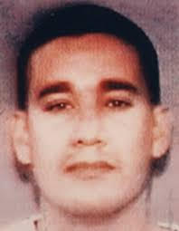

San Francisco

Cunanan dropped out of UC San Diego and moved to the Castro district.
He lived with his high school best friend Elizabeth Cotes and her husband Phil Merrill.
Interestingly, Phil Merrill told investigators that Cunanan once told him “If I got AIDS,
I would go on a five state killing spree to find the person who gave me AIDS” if Cunanan
ever got the disease. Because of the time and
the circumstances, Investigators believed that Cunanan was indeed HIV positive and that his
motive was to try and murder people who gave him the disease. The coroner found Cunanan to
be HIV negative. In San Francisco, Cunanan dealt opiates, cocaine, marijuana and
methamphetamine. He was able to support himself by creating a wide social circle of wealthy
older male friends. Cunanan met many of these men through his work as a male sex worker.
According to sources within the early 90s San Fran nightlife scene, Cunanan met Versace
at the nightclub Collasus. The Versace family denies any meeting took place but Cunanan
did tell his friends he met Versace.